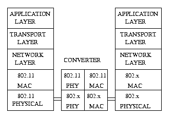

Computer Networks
Prev |
Next |
Index
Wireless Networks
Introduction
As the need of communication became more and more demanding, new
technologies in the field of networks developed. One of them is the use
of wireless networks. It is the transmission of data from source to
destination without the use of wires as the physical media.
Why to use Wireless?
Three reasons may be stated for the over-growing use of wireless networks
across the world:
-
They are ubiquitous networks. As the do not require messy wires as a medium
of communication, they can be used to connect far-off places.
-
They are cheaper than wired networks specially in the case of long-distance
communication.
-
They are pretty effective and fast, especially with the modern advancements
in this field.
Some Terms and Technologies:
ATM-Asynchronous Transfer Mode:
ATM is a connection-oriented switching technology. It was built to
support ISDN (Integrated Services Digital Network). ISDN required high
speed cables for both its narrow band (64 Kbps) and broad band (155 Mbps)
transmission. There were two technologies available for transmitting data-
-
Circuit Switching: In this technology, when a user
makes a call, the resources are reserved for him. The advantage of
this technology is that it prevents collisions among various users. But
the disadvantage is that it leads to inefficient utilization of bandwidth--
if the user fails to send data or if the transmission speed is faster than
the speed of sending data. then most of the bandwidth is wasted.
-
Packet Switching: In this technology, resources are
never reserved for any particular user. The advantage of this technology
is that it leads to efficient utilization of bandwidth i.e. the channel
is never free until & unless there are no users, But the disadvantage
is that it causes many collision.
ATM was built as a combination of the best features of these two. Also
ATM provides QoS (Quality of Service) based on the following priority pattern:
-
CBR-Constant Bit Rate: Jobs
that can tolerate no delay are assigned the CBR priority. These jobs
are provided same number of bits every frame.. For example,
viewing a video reel definitely requires some blocks in every frame.
-
VBR-Variable Bit Rate: Jobs
that may produce different sized packets at different times are assigned
VBR priority. They are provided with a variable number of bits varying
between a maximum and a minimum in different frames. e.g.. a document
may be compressed differently by different machines. Transmitting it will
be a variable transmission.
-
ABR-Available Bit Rate: This is the
same as VBR except that it has only the minimum fixed. If there are no
CBR or VBR jobs left, it can use the entire frame,
-
UBR-Unavailable Bit Rate: These
jobs are the least priority jobs. The network does not promise anything
but simply tries its best to transmit it.
WLAN-Wireless LAN
This is currently being used as dictated by the standards of IEEE 802.11.
It can be installed at the medium access layer and the data transmission
can occur using a converter to reach the wired LAN network.( IEEE 802.x)
WATM-Wireless ATM
It is the wireless version of ATM. It provides QoS. It is not
yet available in market. because installing it will require the simultaneous
installation of ATM infrastructure. It is currently being tested thoroughly.
Coupling of Networks:
The alternatives are:
-
WLAN
LAN
-
WATM
LAN
-
WLAN
ATM
-
WATM
ATM
-
WLAN-LAN is the simplest of the above. According to the IEEE standards,
the IEEE 802.11 (WLAN) can be used with IEEE 802.x (LAN) as follows:
-
WLAN-ATM- NOT FEASIBLE.
-
WATM-LAN- NOT FEASIBLE because WATM requires an infrastructure of the type
ATM
-
WATM-ATM-this is also a simple scheme because WATM can run on ATM.
Issues involved in Wireless Networks
-
Cost and Speed: As it is being considered as an alternative to wired
networks, it should be faster and cheaper.
-
Quality of Transmission: It gives a higher BER (Bit Error Rate).
The BER is greater than 10 -6. This is caused because
transmission quality depends highly on the physical media including landscape,
weather etc.
-
RayLeigh Fading: The data has to travel the distance through a medium
like air. Several rays of the same stream cause Rayleigh fading due to
interference. This causes poor transmission.
-
Multipath Propagation: Similarly, due to multipath propagation,
the signal received at the destination may be garbled.
-
Hand-Offs: If hand-offs are used i.e., hexagonal cells each having
a base station and many mobile terminals, two Mobile terminals that are
far enough can use the same bandwidth. This reuse of bandwidth is helpful.
-
Dynamic Physical Characteristics: The terminal may be mobile and
constantly moving. Thus the distance between the base station and any active
terminal may be constantly changing. This has to be taken into account
while designing.
-
Practical Implementation: The practical implementation of any wireless
network requires CSMA/CD for proper transmission. The range of any terminal
is fixed. So, there may be two terminals that are out of range of each
other. These are called HIDDEN TERMINALS. Collisions may be caused
due to simultaneous sending of data from any two hidden terminals.
The HIDDEN TERMINAL PROBLEM should be overcome with the help of Base Station.
-
.Mobility and Network Topologies: Wireless networks should be effective
enough to overcome the problems caused by the topology of the area and
the mobility of the terminals
-
Frequency Allocation: Licensed & Unlicensed: For licensed networks,
permission has to be taken from the authorities that grant you a fixed
bandwidth which is not used by anybody else while unlicensed networking
does not require any such permissions. It just provides with some unlicensed
bands which can be used by anybody. Unlicensed bands may thus, cause collisions.
-
Capture Effect: If there are more than one terminals requiring the
attention of the Base Station, the one nearer to the base station may capture
it. This unfair access to the base station should be prevented.
-
Power Requirements and Battery: This problem arises for the Mobile
Terminals that run battery or cells. Much dissipation of power is
caused when switching from receiving mode to sending mode and vice versa.
-
Human Safety: Not all bandwidths can be used . Also, the intensity
should not be very high as it may lead to several complications in human
body e.g.. cataract.
Wireless Physical Media
In the wireless physical media, three technologies are used:
-
Transmission at Infrared frequency: This is easier to build and
set-up. It is mainly used for indoor purposes because the beam has to be
focussed and can't cross opaque media like walls etc.
-
Transmission through Microwave: This is preferred as it requires
low power consumption. (the bandwidth is fixed) But the basic problem
is that it requires Line-of-Sight. Also, it requires license.
-
Transmission at Radio Frequency: This is the one that is most
familiar to us. The bandwidth is pretty large.
Integrity and Security of the signal
Spread Spectrum: To reduce
the effect of noise signals, the bandwidth of the signal is increased tremendously.
This is costly but assures better transmission. This is called SPREAD-SPECTRUM.
This is used in two ways:
-
FHSS (Frequency hopping spread spectrum): The entire packet is not
sent at the same bandwidth. Say, it is sent at frequency range A for
time T1, frequency range B for time T2, A for T1, B for T2 and so on. The
receiver also knows this sequence and so, looks at A for time T1, then
at B for time T2 and so on. Thus this sort of understanding between the
sender and receiver prevents the signal from being completely
garbled .
-
DSSS (Direct Sequence Spread Spectrum): This involves sending of
coded data instead of the actual data. This code is known to the
destination only which can decipher the data now.
The problem still left undealt is that of bursty errors. If there
is lot of traffic, interference may hinder the Base Station from
receiving data for a burst of time. This is called "Bursty Errors".
Such problem are looked at by MAC-Medium Access Control.
MEDIUM ACCESS CONTROL
To control the traffic, various techniques are used. MAC fulfills
the following requirements:
-
QoS Requirements:
It provides Quality of Service according to the priority of jobs.
-
Error Control: Error
handling is done using some codes.
-
Frame Size: To transmit
maximum data, we want the frame-size to be maximum but at the same time,
large frame-size highly increases the probability of errors. So, MAC provides
a tradeoff between the above two factors determining the size of the frame.
-
Secure Transmission:
The data meant for a particular receiver is secured from others.
-
Reasonable Transmission:
If the number of users increases, each should get reasonable service. MAC
prevents unfair access to channel.
-
Efficient utilization of Power:
If a transmitter is always on, it is continuously using power even if there
is no data on the channel for it. This is reduced by sending the transmitter
to "sleep mode" whenever the battery is going down. In this mode, the transmitter
is unable to receive any data.
Architecture for Wireless Network
There are two types of architecture possible:
-
AD-HOC NETWORK
-
INFRASTRUCTURE NETWORK
The Ad-Hoc network can be set up anytime. It does not require a Base Station.
It is generally used for indoor purposes.
The Infrastructure network involves Base Station and Mobile Terminals.
It provides uplink facility ( link from MT to BS) and
downlink facility (link from BS to MT).
THE MAC PROTOCOL
This protocol decides how to assign data slots to different users. The
various policies it uses are:
-
Fixed Assignment Policy
-
Random Assignment Policy
-
Centrally Controlled Policy
-
Distributed Controlled Policy
-
Hybrid Controlled Policy
Fixed Assignment Policy:
In this policy, each terminal is assigned some sort of data slot
to speak. It causes a fixed delay. It is done in 3 ways:
-
TDMA (TIME DIVISION MULTIPLE ACCESS) : Each user is given
a fixed time to speak., after which the chance goes to another user. This
cycle continues indefinitely.
-
FDMA (FREQUENCY DIVISION MULTIPLE ACCESS): Each user is given a
fixed bandwidth in which he can speak at all times.
-
CDMA (CODIVISION MULTIPLE ACCESS): Each user is given different
frequencies at different times. This ensures that each user gets a fair
amount of channel each time.
Also, sometimes, statistical multiple access is used in which a slot
is assigned to a user only if it has data to send.
Random Assignment Policy
In this policy, contention slots are provided to all the users.
Problem may arise if the number of users increase drastically. The number
of contention slots should be variable. This may cause some limiting of
data slots but is necessary to prevent the derailment of the service .
Centrally Controlled Policy:
This is used in an infrastructure architecture. It involves the
participation of a Base Station which may assign slots and priorities(CNBR,VBR
etc.) to all the users.
Distributed Controlled Policy:
This is used in Ad-Hoc architecture. The control is among the terminals
which decide among themselves about who is going to speak first.
Hybrid Controlled Policy:
This combines the best features of centrally controlled and distributed
controlled policies.
KINDS OF MAC PROTOCOLS:
There are two kinds of Mac protocols:
-
FDD (Frequency Division Duplex) This provides two separate bandwidths
for uplink and downlink transmission. This leads to inefficient utilization
of bandwidth as there is more traffic on downlink than uplink
-
TDD (Time Division Duplex) This provides an adoptive boundary between
the uplink and downlink frequency which depends on the what is being used
at that particular time. It works as follows:
Any mobile terminal can be in 3 states : empty state, request state and
ready-to-transmit state.
-
uplink-MT1 sends a random-access request to BS to communicate with MT2
-
downlink: BS sends a b-bit access id to MT2
-
uplink: MT1 sends the packet
-
downlink: BS sends the packet to MT2
The TDD is more in use now-a-days.
back to top
Prev| Next |
Index